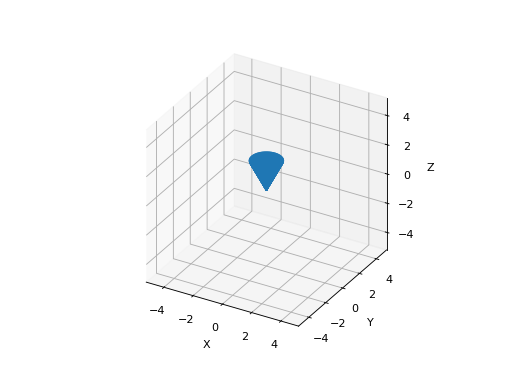
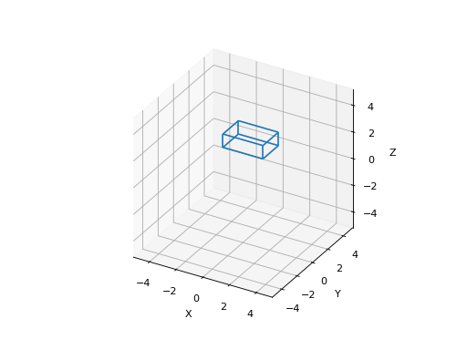
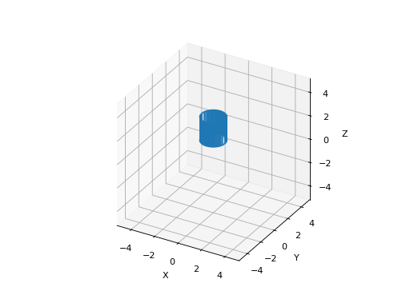
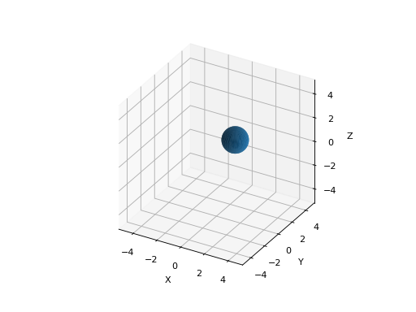

3D graphics
3d graphical primitives which build on Matplotlib plot_wireframe and plot_surface.
- plot_cone(radius, height, resolution=50, flip=False, centre=(0, 0, 0), ends=False, pose=None, ax=None, filled=False, **kwargs)[source]
Plot a cone using matplotlib
- Parameters
radius (
float) – radius of cone at open endheight (
float) – height of cone in the z-directionresolution (
Optional[int]) – number of points on circumferece, defaults to 50flip (
Optional[bool]) – cone faces upward, defaults to Falseends (
Optional[bool]) – add a surface for the base of the conepose (SE3, optional) – pose of cone, defaults to None
ax (
Optional[Axes]) – axes to draw into, defaults to Nonefilled (bool, optional) – draw filled polygon, else wireframe, defaults to False
kwargs – arguments passed to
plot_wireframeorplot_surface
- Returns
matplotlib objects
- Return type
list of matplotlib object types
The axis of the cone is parallel to the z-axis and it is drawn pointing down. The point is at z=0 and the open end at z=
height. Ifflipis True then the cone faces upwards, the point is at z=heightand the open end at z=0.The cylinder can be positioned by setting
centre, or positioned and orientated by settingpose.Example:
>>> plot_cone(radius=1, height=2)
(Source code, png, hires.png, pdf)
 - Seealso
plot_surface(),plot_wireframe()
{kind=link}
{kind=link}
- plot_cuboid(sides=(1, 1, 1), centre=(0, 0, 0), pose=None, ax=None, filled=False, **kwargs)[source]
Plot a cuboid (3D box) using matplotlib
- Parameters
sides (array_like(3), optional) – side lengths, defaults to 1
centre (array_like(3), optional) – centre of box, defaults to (0, 0, 0)
pose (SE3, optional) – pose of sphere, defaults to None
ax (Axes3D, optional) – axes to draw into, defaults to None
filled (bool, optional) – draw filled polygon, else wireframe, defaults to False
kwargs – arguments passed to
plot_wireframeorplot_surface
- Returns
matplotlib collection
- Return type
Line3DCollection or Poly3DCollection
Example:
>>> plot_cone(radius=1, height=2)
(Source code, png, hires.png, pdf)
 - Seealso
plot_surface(),plot_wireframe()
{kind=link}
{kind=link}
- plot_cylinder(radius, height, resolution=50, centre=(0, 0, 0), ends=False, pose=None, ax=None, filled=False, **kwargs)[source]
Plot a cylinder using matplotlib
- Parameters
radius (float) – radius of cylinder
height (float or array_like(2)) – height of cylinder in the z-direction
resolution (
Optional[int]) – number of points on circumference, defaults to 50centre (
Union[List,Tuple[float,float,float],ndarray[Any,dtype[TypeVar(ScalarType, bound=generic, covariant=True)]],None]) – position of centrepose (SE3, optional) – pose of cylinder, defaults to None
ax (Axes3D, optional) – axes to draw into, defaults to None
filled (bool, optional) – draw filled polygon, else wireframe, defaults to False
kwargs – arguments passed to
plot_wireframeorplot_surface
- Returns
matplotlib objects
- Return type
list of matplotlib object types
The axis of the cylinder is parallel to the z-axis and extends from z=0 to z=height, or z=height[0] to z=height[1].
The cylinder can be positioned by setting
centre, or positioned and orientated by settingpose.Example:
>>> plot_cylinder(radius=1, height=(1,3))
(Source code, png, hires.png, pdf)
 - Seealso
plot_surface(),plot_wireframe()
{kind=link}
{kind=link}
- plot_ellipsoid(E, centre=(0, 0, 0), scale=1, confidence=None, resolution=40, inverted=False, ax=None, **kwargs)[source]
Draw an ellipsoid using matplotlib
- Parameters
E (ndarray(3,3)) – ellipsoid
centre (tuple, optional) – [description], defaults to (0,0,0)
scale (
Optional[float]) –confidence (float) – confidence interval, range 0 to 1
resolution (int, optional) – number of points on circumferece, defaults to 40
inverted (bool, optional) – \(E^{-1}\) rather than \(E\) provided, defaults to False
ax ([type], optional) – [description], defaults to None
wireframe (bool, optional) – [description], defaults to False
stride (int, optional) – [description], defaults to 1
plot_ellipsoid(E)draws the ellipsoid defined by \(x^T \mat{E} x = 0\) on the current plot.Example:
>>> plot_ellipsoid(np.diag([1, 2, 3]), [1, 1, 0], color="r", resolution=10); # draw red ellipsoid
(Source code, png, hires.png, pdf)

Note
If a confidence interval is given then
Eis interpretted as a covariance
matrix and the ellipse size is computed using an inverse chi-squared function.
- Seealso
plot_surface(),plot_wireframe()- Return type
List[Artist]
{kind=link}
{kind=link}
- plot_sphere(radius, centre=(0, 0, 0), pose=None, resolution=50, ax=None, **kwargs)[source]
Plot a sphere using matplotlib
- Parameters
centre (array_like(3), ndarray(3,N), optional) – centre of sphere, defaults to (0, 0, 0)
radius (float, optional) – radius of sphere, defaults to 1
resolution (int, optional) – number of points on circumferece, defaults to 50
pose (SE3, optional) – pose of sphere, defaults to None
ax (Axes3D, optional) – axes to draw into, defaults to None
filled (bool, optional) – draw filled polygon, else wireframe, defaults to False
kwargs – arguments passed to
plot_wireframeorplot_surface
- Returns
matplotlib collection
- Return type
list of Line3DCollection or Poly3DCollection
Plot one or more spheres. If
centreis a 3xN array, then each column is taken as the centre of a sphere. All spheres have the same radius, color etc.Example:
>>> from spatialmath.base import plot_sphere >>> plot_sphere(radius=1, color="r", resolution=10) # red sphere wireframe >>> plot_sphere(radius=1, centre=(1,1,1), filled=True, facecolor='b')
(Source code, png, hires.png, pdf)

(Source code, png, hires.png, pdf)
 - Seealso
plot_surface(),plot_wireframe()
{kind=link}
{kind=link}
{kind=link}
{kind=link}
- plotvol3(dim=None, ax=None, equal=True, grid=False, labels=True, projection='ortho')[source]
Create 3D plot volume
- Parameters
ax (Axes3DSubplot, optional) – axes of initializer, defaults to new subplot
equal (bool) – set aspect ratio to 1:1:1, default False
- Returns
initialized axes
- Return type
Axes3DSubplot
Initialize axes with dimensions given by
dimwhich can be:input
xrange
yrange
zrange
A (scalar)
-A:A
-A:A
-A:A
[A, B]
A:B
A:B
A:B
[A, B, C, D, E, F]
A:B
C:D
E:F
- Seealso
plotvol2(),expand_dims()